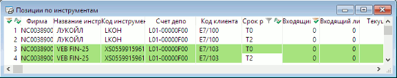

меню Создать окно / Позиции по инструментам, кнопка
Контроль количества инструментов, доступных для совершения торговых операций
на фондовом рынке.
Для операций на срочном рынке см. Позиции по клиентским счетам, Ограничения по клиентским счетам. Чтобы иметь возможность совершения торговых операций, пользователь должен
иметь назначенный администратором лимит по инструментам (допускается нулевой).
По умолчанию пороговое значение равно «100000».  Каждая строка таблицы содержит информацию о позициях по отдельному коду
клиента.
Строки таблицы могут выделяться цветом в зависимости от настроек. По умолчанию используются следующие цветовые настройки:
В столбцах таблицы отображаются следующие параметры:
Назначение
Формат таблицы
Параметр
Значение
Фирма
Идентификатор участника торгов в торговой системе
биржи
Название инструмента
Наименование инструмента в торговой системе
Код инструмента
Регистрационный код инструмента в торговой системе
Счет депо
Счет депо, на котором учитываются средства клиента
Код клиента
Код клиента в системе QUIK, на которого установлен
лимит
*, ** Входящий остаток
Собственные средства клиента до совершения операций (на начало
торгов)
*, ** Входящий лимит
Заемные средства, доступные клиенту до совершения операций (на начало
торгов)
*, ** Текущий остаток
Собственные средства клиента на текущий момент (с
учетом совершенных операций)
*, ** Текущий лимит
Заемные средства, доступные клиенту на текущий момент (с учетом
совершенных операций)
* В продаже
Количество инструментов, заблокированное под исполнение заявок клиента на
продажу
* В покупке
Количество инструментов в активных заявках клиента на покупку
* Всего
Количество собственных и доступных для займа инструментов
«Всего» =
«Текущий остаток» + «Текущий лимит»
* Доступно
Количество инструментов, доступное для заявок на продажу
«Доступно» =
«Всего» - «В продаже»
Баланс
Количество инструментов после совершения сделок, за вычетом
заемных средств
«Баланс» = «Всего» - «Входящий
лимит»
Цена приобретения
Средневзвешенная цена приобретения, рассчитанная по
сделкам клиента
Срок расчётов
Срок расчётов. Значение «Tx» соответствует позиции клиента после совершения всех расчетов
* - значение отображается с точностью количества инструмента
** - подробнее о работе с лимитами клиентов см. в Операции брокера
К таблице может быть применен Режим связанных окон.
Данные из таблицы доступны для копирования, вывода через DDE-сервер и экспорта по ODBC.
Функции, доступные для данной таблицы, могут быть вызваны из пункта меню Действия или контекстного меню таблицы.
Дополнительно:
См. также Настройка таблицы.